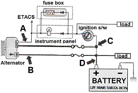

지게차유사(롤러,기중기등) (2014-10-11 기출문제)
1. 4행정 사이클 기관에서 흡기 밸브와 배기 밸브 모두 닫혀 있는 행정은?
- 흡입 행정, 압축 행정
- 압축 행정, 동력 행정
- 폭발 행정, 배기 행정
- 배기 행정, 흡입 행정
(정답률: 71%)

2. 엔진 오일 구비조건 중 높으면 좋은 것은?
- 응고점과 비등점
- 발화점과 응고점
- 인화점과 발화점
- 유동점과 인화점
(정답률: 54%)
3. 엔진의 윤활유 소비량이 과다해지는 가장 큰 원인은?
- 기관의 과냉
- 피스톤 링 마멸
- 오일 여과기 필터 불량
- 냉각펌프 손상
(정답률: 83%)
4. 실린더 헤드 개스킷이 손상되었을 때 일어나는 현상으로 가장 옳은 것은?
- 엔진오일의 압력이 높아진다.
- 피스톤 링의 작동이 느려진다.
- 압축압력과 폭발압력이 낮아진다.
- 피스톤이 가벼워진다.
(정답률: 79%)
5. 기관의 연료분사펌프에 연료를 보내거나 공기빼기 작업을 할 때 필요한 장치는?
- 체크 밸브(check valve)
- 프라이밍 펌프(priming pump)
- 오버플로 펌프(overflow pump)
- 드레인 펌프(drain pump)
(정답률: 66%)
6. 디젤기관을 시동할 때 주의사항으로 틀린 것은?
- 기온이 낮을 때는 예열 경고등이 소등되면 시동한다.
- 기관시동은 각종 조작레버가 중립위치에 있는가를 확인 후 행한다.
- 시동과 동시에 급가속하지 않는다.
- 시동 후 적어도 1분 정도는 시동 스위치의 스타트(ST) 위치에서 손을 떼지 않아야 한다.
(정답률: 90%)
7. 디젤기관에서 노크방지 방법으로 틀린 것은?
- 착화성이 좋은 연료를 사용한다.
- 연소실 벽 온도를 높게 유지한다.
- 압축비를 낮춘다.
- 착화기간 중의 분사량을 적게 한다.
(정답률: 44%)
8. 연료의 세탄가와 가장 밀접한 관련이 있는 것은?
- 열효율
- 폭발압력
- 착화성
- 인화성
(정답률: 62%)
9. 디젤기관 시동보조 장치에 사용되는 디콤프(de-comp)의 기능에 대한 설명으로 틀린 것은?
- 기관의 출력을 증대하는 장치이다.
- 한랭 시 시동할 때 원활한 회전으로 시동이 잘 될 수 있도록 하는 역할을 하는 장치이다.
- 기관의 시동을 정지할 때 사용될 수 있다.
- 기동전동기에 무리가 가는 것을 예방하는 효과가 있다.
(정답률: 53%)
10. 방열기에 물이 가득 차 있는데도 기관이 과열될 때 원인으로 옳은 것은?
- 팬벨트의 장력이 세기 때문
- 사계절용 부동액을 사용했기 때문
- 정온기가 열린 상태로 고장 났기 때문
- 라디에이터의 팬이 고장 났기 때문
(정답률: 75%)
11. 기관에서 수온 조절기의 설치 위치로 옳은 것은?
- 실린더 헤드 물 재킷 출구 부분
- 실린더 블록 물 재킷 출구 부분
- 라디에이터 위 탱크 입구 부분
- 라디에이터 아래 탱크 출구 부분
(정답률: 63%)
12. 터보식 과급기의 작동상태에 대한 설명으로 틀린 것은?
- 디퓨저에서는 공기의 압력 에너지가 속도 에너지로 바뀌게 된다.
- 배기가스가 임펠러를 회전시키면 공기가 흡입되어 디퓨저에 들어간다.
- 디퓨저에서는 공기의 속도 에너지가 압력 에너지로 바뀌게 된다.
- 압축공기가 각 실린더의 밸브가 열릴 때마다 들어가 충전 효율이 증대된다.
(정답률: 31%)
13. 축전지의 용량(전류)에 영향을 주는 요소로 틀린 것은?
- 극판의 수
- 극판의 크기
- 전해액의 양
- 냉각율
(정답률: 67%)
14. 반도체 소자 중 사이리스터(SCR)으 단자 명칭으로 옳은 것은?
- 컬렉터
- 게이트
- 이미터
- 베이스
(정답률: 46%)
15. 한쪽 방향지시등만 점멸 속도가 빠른 원인으로 옳은 것은?
- 전조등 배선 접촉 불량
- 플래셔 유닛 고장
- 한쪽 램프의 단선
- 비상등 스위치 고장
(정답률: 47%)
16. 건설기계용 납산 축전지에 대한 설명으로 틀린 것은?
- 화학에너지를 전기에너지로 변환하는 것이다.
- 완전 방전 시에만 재충전한다.
- 전압은 셀의 수에 의해 결정된다.
- 전해액 면이 낮아지면 증류수를 보충하여야 한다.
(정답률: 81%)
17. 그림과 같이 충전회로에서 발전 전류 측정위치는?

- A
- B
- C
- D
(정답률: 50%)
18. 기동전동기의 피니언과 기관의 플라이휠 링기어가 치합되는 방식 중 피니언의 관성과 직류 직권전동기가 무부하에서 고속 회전하는 특성을 이용한 방식은?
- 피니언 섭동식
- 벤딕스식
- 전기자 섭동식
- 전자식
(정답률: 32%)
19. 탠덤, 머캐덤 롤러의 살수 탱크는 어떤 역할을 하는가?
- 엔진에 공급하는 연료를 저장한다.
- 각부장치에 주유하는 오일을 저장한다.
- 롤러에 물을 적셔주어 작업 시 점착성을 향상시킨다.
- 롤러에 물을 적셔주어 작업 시 점착성 물질이 롤에 묻는 것을 방지한다.
(정답률: 75%)
20. 아스팔트 피니셔에서 공급받은 혼합재를 균일하게 공급 살포하는 장치는?
- 호퍼
- 스프레팅 스크류
- 스크리드
- 댐퍼
(정답률: 38%)
21. 롤러의 운전 중 점검 사항이 아닌 것은?
- 냉각수 온도
- 유압 오일 온도
- 엔진 회전수
- 배터리 전해액
(정답률: 70%)
22. 건설기계의 안전수칙에 대한 설명으로 틀린 것은?
- 운전석을 떠날 때 기관을 정지시켜야 한다.
- 버킷이나 하중을 달아 올린 채로 브레이크를 걸어 두어서는 안 된다.
- 장비를 다른 곳으로 이동할 때에는 반드시 선회 브레이크를 풀어 놓고 장비로부터 내려와야 한다.
- 무거운 하중은 5~10m 들어 올려 브레이크나 기계의 안전을 확인한 후 작업에 임하도록 한다.
(정답률: 70%)
23. 타이어식 건설기계 현가장치에 사용되는 공기스프링의 특징이 아닌 것은?
- 차체의 높이가 항상 일정하게 유지된다.
- 스프링 정수를 자동적으로 조정한다.
- 금속스프링보다 구조가 간단하고 값이 싸다.
- 고유 진동수를 거의 일정하게 유지한다.
(정답률: 68%)
24. 건설기계 운전 중 점검사항이 아닌 것은?
- 경고등 점멸 여부
- 라디에이터 냉각수량 점검
- 작동 중 기계 이상음 점검
- 작동상태 이상 유무 점검
(정답률: 72%)
25. 유성기어 장치의 구성요소가 바르게 된 것은?
- 평기어, 유성기어, 후진기어, 링기어
- 선기어, 유성기어, 랙크기어, 링기어
- 링기어, 스퍼기어, 유성기어 캐리어, 선기어
- 선기어, 유성기어, 유성기어 캐리어, 링기어
(정답률: 57%)
26. 무한궤도식 주행 장치에서 스프로킷의 이상 마모를 방지하기 위해서 조정해야 하는 것은?
- 슈의 간격
- 트랙의 장력
- 클러치 커버
- 아이들러의 위치
(정답률: 54%)
27. 플라이휠과 압력판 사이에 설치되고 클러치 축을 통하여 변속기로 전달하는 것은?
- 클러치 판
- 클러치 스프링
- 클러치 커버
- 릴리스 베어링
(정답률: 59%)
28. 아스팔트피니셔의 변속 조작이 불가능한 원인에 대해서 가장 알맞게 설명한 것은?
- 클러치가 분리되지 않았을 때
- 변속기 인터록 스프링 장력이 약할 때
- 클러치에 주유가 부족할 때
- 변속 기어오일 누유가 있을 때
(정답률: 56%)
29. 무한궤도식 건설기계에서 트랙의 구성품으로 맞는 것은?
- 슈, 죠인트, 스프로킷, 핀, 슈볼트
- 스프로킷, 트랙롤러, 상부롤러, 아이들러
- 슈, 스포로킷, 하부롤러, 상부롤러, 감속기
- 슈, 슈볼트, 링크, 부싱, 핀
(정답률: 46%)
30. 건설기계에서 스티어링 클러치에 대한 설명으로 틀린 것은?
- 조향, 환향 클러치라고도 한다.
- 주행 중 진행 방향을 바꾸기 위한 장치이다.
- 전달된 회전력을 좌우 별도로 단속할 수 있다.
- 트랙이 설치된 장비는 동력을 끊은 반대쪽으로 돌게 된다.
(정답률: 59%)
31. 건설기계의 조종 중 과실로 사망 1명의 인명피해를 입힌 때 조종사면허 처분기준은?
- 면허취소
- 면허효력 정지 60일
- 면허효력 정지 45일
- 면허효력 정지 30일
(정답률: 41%)
32. 건설기계관리법에 따라 최고주행속도 15km/h 미만의 타이어식 건설기계가 필히 갖추어야 할 조명장치가 아닌 것은?
- 전조등
- 후부반사기
- 비상점멸 표시등
- 재동등
(정답률: 42%)
33. 건설기계 조종사가 신상에 변동이 있을 때 그 사실이 발생할 날로부터 며칠 이내에 신고하여야 하는가?
- 10일
- 14일
- 21일
- 30일
(정답률: 44%)
34. 정기검사 신청을 받은 검사대행자는 며칠 이내에 검사일시 및 장소를 신청인에게 통지하여야 하는가?
- 20일
- 15일
- 5일
- 3일
(정답률: 37%)
35. 소형건설기계 조종교육의 내용으로 틀린 것은?
- 건설기계관리법규 및 자동차관리법
- 건설기계 기관, 전기 및 작업장치
- 유압 일반
- 조종 실습
(정답률: 39%)
36. 건설기계관리법상 건설기계에 해당되지 않는 것은?
- 자체 중량 2톤 이상의 로더
- 노상안정기
- 천장크레인
- 콘크리트 살포기
(정답률: 48%)
37. 건설기계 대여업을 하고자 하는 자는 누구에게 등록을 하여야 하는가?
- 고용노동부장관
- 안전행정부장관
- 국토교통부장관
- 시ㆍ도지사
(정답률: 76%)
38. 건설기계 조종사의 면허취소 사유가 아닌 것은?
- 거짓 또는 부정한 방법으로 건설기계의 면허를 받을 때
- 면허정지처분을 받은 자가 그 정지기간 중 건설기계를 조종한 때
- 건설기계의 조종 중 고의로 중대한 사고를 일으킨 때
- 정기검사를 받지 않은 건설기계를 조종한 때
(정답률: 85%)
39. 자가용 건설기계 등록번호표의 색상은?
- 주황색 판에 흰색 문자
- 적색 판에 흰색 문자
- 백색 판에 검정색 문자
- 녹색 판에 흰색 문자
(정답률: 75%)
40. 다음 중 등록자를 관할하는 검사대행자가 시행할 수 없는 것은?
- 정기검사
- 신규등록검사
- 수시검사
- 정비명령
(정답률: 66%)
41. 유압 작동부에서 오일이 누유 되고 있을 때 가장 먼저 점검하여야 할 곳은?
- 실(seal)
- 피스톤
- 기어
- 펌프
(정답률: 78%)
42. 유압계통 내의 최대압력을 제어하는 밸브는?
- 체크 밸브
- 쵸크 밸브
- 오리피스 밸브
- 릴리프 밸브
(정답률: 71%)
43. 유압에너지를 공급받아 회전운동을 하는 유압기기는?
- 유압실린더
- 유압모터
- 유압밸브
- 롤러 리미트
(정답률: 84%)
44. “밀폐된 용기 속의 유체 일부에 가해진 압력은 각부의 모든 부분에 같은 세기로 전달된다.”는 원리는?
- 베르누이의 원리
- 렌츠의 원리
- 파스칼의 원리
- 보일 샤를의 원리
(정답률: 80%)
45. 유압장치에서 가장 많이 사용되는 유압회로도는?
- 조합 회로도
- 그림 회로도
- 단면 회로도
- 기호 회로도
(정답률: 64%)
46. 유압유의 압력이 상승하지 않을 때의 원인을 점검하는 것으로 가장 거리가 먼 것은?
- 펌프의 토출량 점검
- 유압회로의 누유상태 점검
- 필리프 밸브의 작동상태 점검
- 펌프 설치 고정 볼트의 강도 점검
(정답률: 67%)
47. 유압회로 내에서 서지압(surge pressure)이란?
- 과도적으로 발생하는 이상 압력의 최대값
- 정상적으로 발생하는 압력의 최대값
- 정상적으로 발생하는 압력의 최소값
- 과도적으로 발생하는 이상 압력의 최소값
(정답률: 65%)
48. 유압회로 내에 기포가 발생할 때 일어날 수 있는 현상과 가장 거리가 먼 것은?
- 작동유의 누설저하
- 소음증가
- 공동현상 발생
- 액추에이터의 작동불량
(정답률: 64%)
49. 축압기의 용도로 적합하지 않는 것은?
- 유압 에너지의 저장
- 충격 흡수
- 유량 분배 및 제어
- 압력 보상
(정답률: 40%)
50. 2개 이상의 분기회로를 갖는 회로 내에서 작동순서를 회로의 압력 등에 의하여 제어하는 밸브는?
- 체크 밸브
- 시퀀스 밸브
- 한계 밸브
- 서보 밸브
(정답률: 70%)
51. 작업 개시 전에 실시하는 후크(Hook)의 점검 기준이 아닌 것은?
- 균열이 없는 것을 사용할 것
- 개구부가 원래 간격의 5%를 초과하지 않을 것
- 단면 지름의 감소가 원래 지름의 5%를 초과하지 않을 것
- 두부 및 만곡의 내측에 홈이 있는 것을 사용할 것
(정답률: 75%)
52. 가스 용접 시 사용하는 봄베의 안전수칙으로 틀린 것은?
- 봄베를 넘어뜨리지 않는다.
- 봄베를 던지지 않는다.
- 산소 봄베는 40℃ 이하에서 보관한다.
- 봄베 몸통에는 녹슬지 않도록 그리스를 바른다.
(정답률: 74%)
53. 작업 시 준수해야 할 안전사항으로 틀린 것은?
- 대형 물건의 기중 작업 시 신호 확인을 철저히 할 것
- 고장 중인 기기에는 표시를 해 둘 것
- 정전 시에는 반드시 전원을 차단할 것
- 자리를 비울 때 장비 작동은 자동으로 할 것
(정답률: 92%)
54. 사고의 원인 중 가장 많은 부분을 차지하는 것은?
- 불가항력
- 불안전한 환경
- 불안전한 행동
- 불안전한 지시
(정답률: 87%)
55. 6각 볼트ㆍ너트를 조이고 풀 때 가장 적합한 공구는?
- 바이스
- 플라이어
- 드라이버
- 복스 렌치
(정답률: 79%)
56. 근로자 1000명 당 1년간에 발생하는 재해자 수를 나타낸 것은?
- 도수율
- 강도율
- 연천인율
- 사고율
(정답률: 60%)
57. 다음 중 장갑을 끼고 작업할 때 가장 위험한 작업은?
- 건설기계운전 작업
- 타이어 교환 작업
- 해머 작업
- 오일 교환 작업
(정답률: 82%)
58. 크레인으로 중량물을 운반할 때의 주의사항으로 틀린 것은?
- 시선은 반드시 운반물만을 주시한다.
- 운반물이 추락하지 않도록 한다.
- 규정 무게를 초과하여 들어 올리지 않는다.
- 운반물이 흔들리지 않도록 한다.
(정답률: 87%)
59. 화재 시 연소의 주요 3요소로 틀린 것은?
- 고압
- 가연물
- 점화원
- 산소
(정답률: 81%)
60. 작업환경 개선 방법으로 가장 거리가 먼 것은?
- 채광을 좋게 한다.
- 조명을 밝게 한다.
- 부품을 신품으로 모두 교환한다.
- 소음을 줄인다.
(정답률: 73%)